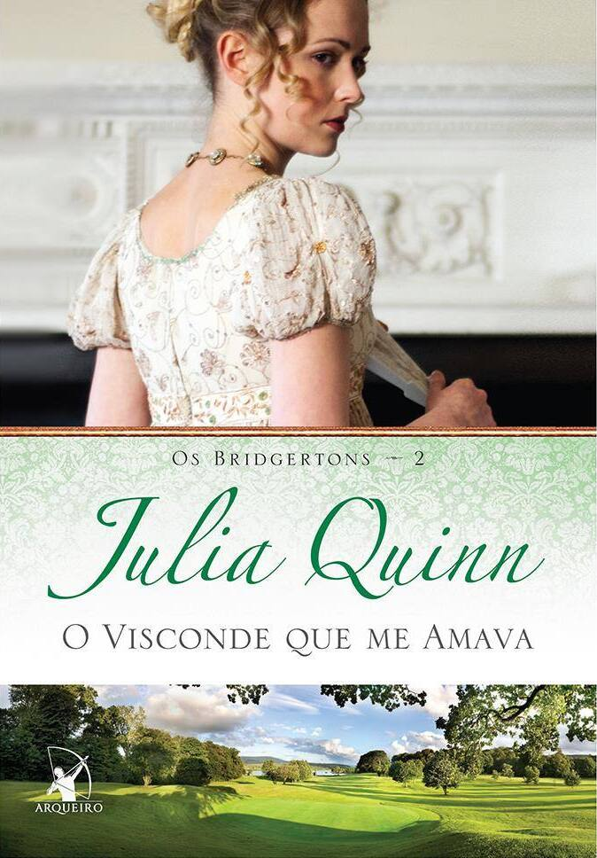
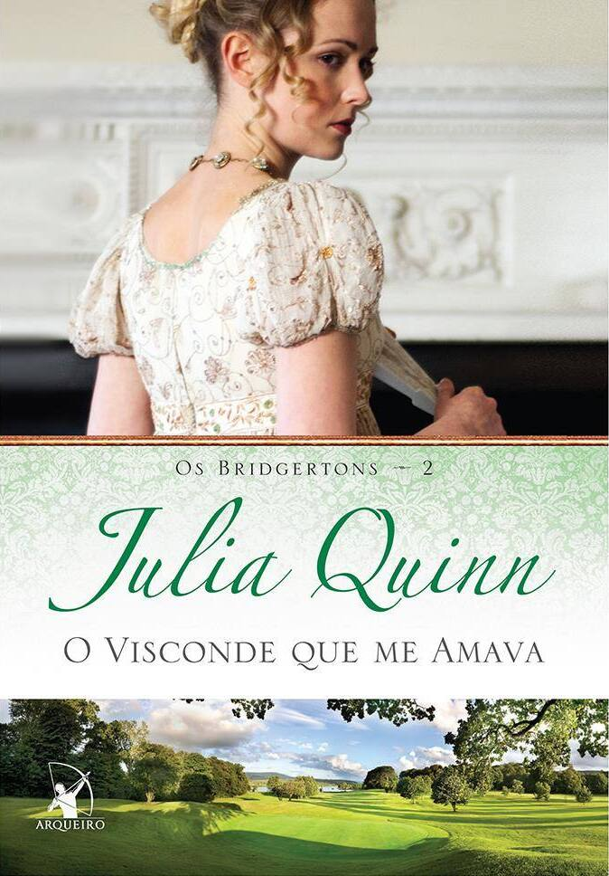

Corte de Espinhos e Rosas
- Autora: Sarah J. Maas
- Nº de Páginas: 432 434
- Gênero Literário: Romance, Fantasia, Young Adult
SINOPSE
Ela roubou uma vida. Agora deve pagar com o coração.
Num mundo dividido uma muralha mágica separa duas espécies. De um lado, os feéricos vivem dentro de suas fronteiras cheias de beleza e mistério; do outro, os humanos possuem apenas medo, desconfiança e dificuldades.
Feyre, filha de um casal de mercadores humanos e falidos, se torna caçadora para sustentar a família. Dura como as flechas que carrega, letal como sua pontaria, ela abandona as fantasias de garota e as troca pela árdua vida nas florestas ao redor de sua aldeia.
Sua única alegria é observar as cores e sonhar em capturá-las. Mas, na floresta, coberta de neve tudo é branco e árido; como o ódio pelos feéricos que carrega no coração; Como as telas que não pode comprar ou colorir. Até que um enorme lobo cruza seu caminho... Sem hesitar, Feyre dispara... uma flecha. Um ato de rebelião.
Após matar o lobo, uma criatura bestial surge exigindo uma reparação. Arrastada para além do muro, para uma terra mágica e traiçoeira - que ela só conhece por meio de lendas -, a jovem descobre que seu captor não é um animal, mas Tamlin, Grão Senhor da Terra Primaveril. Um feérico com um segredo, escondido sob uma máscara. Ela descobre ainda que o então animal que havia assassinado era, na verdade, uma criatura mágica, uma fada zoomórfica transformada em lobo.
À medida que ela descobre mais sobre este mundo onde a magia impera, seus sentimentos por Tamlin passam da mais pura hostilidade até uma paixão avassaladora. Enquanto isso, uma sinistra e antiga sombra avança sobre o mundo das fadas e Feyre deve provar seu amor para detê-la ou Tamlin e seu povo estarão condenados.


 
